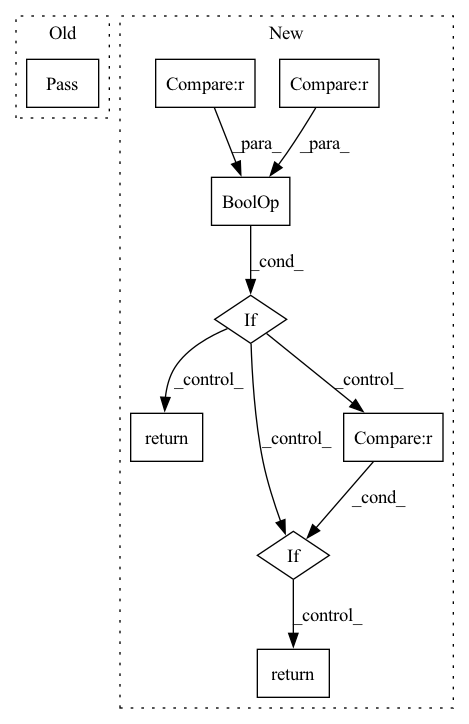

Pattern ID :23731

Before Change
class PureMatMul(ONNXForward):
@staticmethod
def forward_can_be_applied(node, state, sdfg) -> bool:
pass
@staticmethod
def forward(node, state, sdfg) -> Node:
inputs, outputs = _get_inputs_and_outputs(sdfg, state, node)
After Change
if input0_dim == 2 and input1_dim == 2:
return True
if input0_dim == 1 and input1_dim == 2:
return True
if input1_dim == 2 and input0_dim == 1:
return True
// this can be relaxed
if input0_dim == 4 and input1_dim == 4:
return True
return False
@staticmethod
def forward(node: ONNXOp, state: SDFGState, sdfg: SDFG) -> Node:
In pattern: SUPERPATTERN
Frequency: 3
Non-data size: 9
Instances
Fragment ID: 73959016
Project Name: spcl/daceml
Commit Name: 8670db9ebbc9ebfbc9eda5c63a7e3a81dfe71121
Time: 2020-11-25
Author: oliverrausch99@gmail.com
File Name: daceml/onnx/op_implementations/pure_implementations.py
M Class Name: PureMatMul
N Class Name: PureMatMul
M Method Name: forward_can_be_applied(3)
N Method Name: forward_can_be_applied(3)
M Parent Class: ONNXForward
N Parent Class: ONNXForward
M File Name: daceml/onnx/op_implementations/pure_implementations.py
N File Name: daceml/onnx/op_implementations/pure_implementations.py
M Start Line: 113
M End Line: 114
N Start Line: 65
N End Line: 84
'>
Before Change
if self.strategy == "constant":
return torch.mul(self.alpha, 1)
elif self.strategy == "hinge":
pass
elif self.strategy == "polynomial":
pass
else:
raise ValueError("Invalid strategy {}".format(self.strategy))
After Change
staleness = self.current_time - receive_model_time
if self.strategy == "constant":
return torch.mul(self.alpha, 1)
elif self.strategy == "hinge" and self.b is not None and self.a is not None:
if staleness <= self.b:
return torch.mul(self.alpha, 1)
else:
return torch.mul(self.alpha,
1 / (self.a * ((staleness - self.b) + 1)))
elif self.strategy == "polynomial" and self.a is not None:
return (staleness + 1)**(-self.a)
else:
raise ValueError("Invalid strategy {}".format(self.strategy))
'>
Fragment ID: 73958976
Project Name: smilelab-fl/fedlab
Commit Name: 873a8fae3ee2680ce8ee3156ff9c866d0bb5f31f
Time: 2021-08-17
Author: 928255708@qq.com
File Name: fedlab/core/server/handler.py
M Class Name: AsyncParameterServerHandler
N Class Name: AsyncParameterServerHandler
M Method Name: _adapt_alpha(2)
N Method Name: _adapt_alpha(2)
M Parent Class: ParameterServerBackendHandler
N Parent Class: ParameterServerBackendHandler
M File Name: fedlab/core/server/handler.py
N File Name: fedlab/core/server/handler.py
M Start Line: 253
M End Line: 256
N Start Line: 244
N End Line: 254
'>
Before Change
return False
if not a_aa and not b_aa :
// TODO: merge non AA text regions
pass
return False
After Change
fs_b = b.font_size()
fs = min(fs_a, fs_b)
ca, cb = a.centroid(), b.centroid()
if a.distance_to_point(cb) > fs * char_gap_tolerance2 and b.distance_to_point(ca) > fs * char_gap_tolerance2 :
return False
if abs(fs_a - fs_b) / fs > 0.25 :
return False
return True
return False
'>
Fragment ID: 73959089
Project Name: zyddnys/manga-image-translator
Commit Name: b73fbc95f913be668ffa580127ea069948b1d4dc
Time: 2021-06-19
Author: zyddnys@outlook.com
File Name: utils.py
M Class Name: AnonimousClass
N Class Name: AnonimousClass
M Method Name: quadrilateral_can_merge_region(5)
N Method Name: quadrilateral_can_merge_region(5)
M Parent Class:
N Parent Class:
M File Name: utils.py
N File Name: utils.py
M Start Line: 225
M End Line: 225
N Start Line: 287
N End Line: 296